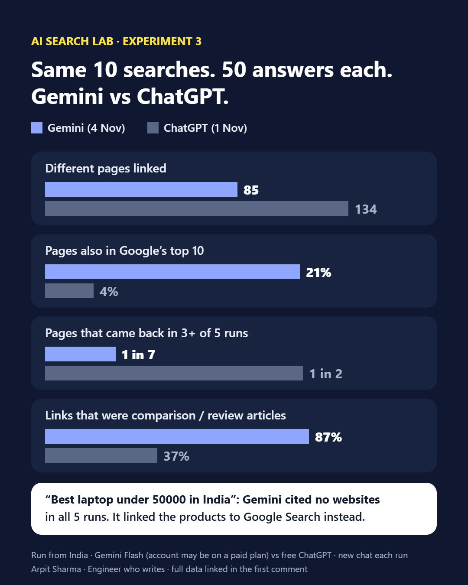

What I found
Gemini stayed much closer to Google. 18 of the 85 pages Gemini cited (21%) were in Google's top 10 for the same search. For ChatGPT it was 6 of 134 (4%). At the website level, 26 of the 80 sites Gemini used (about 1 in 3) had some page in Google's top 10.
The two AIs barely agreed. Only 7 exact pages showed up in both Gemini's and ChatGPT's answers, and only 14 websites.
Gemini linked to articles, ChatGPT to brands. 74 of Gemini's 85 pages (87%) were comparison, review or guide articles. Only 5 were a brand's or institution's own page, and 6 were government sites. ChatGPT went the other way: about half its links were brands' own pages.
Gemini changed its sources more. Only 12 of its 85 pages (about 1 in 7) came back in 3 or more of the 5 runs. For ChatGPT it was about 1 in 2. Gemini also cited fewer pages per answer, about 2.5, and 6 of the 50 answers cited no website at all.
For shopping, Gemini sent people back to Google. For "best laptop under 50000 in India", Gemini cited no websites in any of the 5 runs. It linked the product names to Google Search results instead.

Search by search
| # | Search | Gemini pages | In 3+ runs | In Google top 10 | ChatGPT pages | ChatGPT in Google top 10 |
|---|---|---|---|---|---|---|
| 1 | best CRM for small business in India | 5 | 1 | 0 | 14 | 1 |
| 2 | best accounting software for small business in India | 13 | 2 | 3 | 16 | 1 |
| 3 | best term insurance plan in India | 8 | 1 | 2 | 8 | 1 |
| 4 | best laptop under 50000 in India | 0 | 0 | 0 | 11 | 0 |
| 5 | best online MBA in India | 14 | 1 | 4 | 18 | 0 |
| 6 | best SEO tools for beginners | 7 | 0 | 2 | 24 | 0 |
| 7 | best project management software for startups | 3 | 1 | 1 | 15 | 1 |
| 8 | how to file ITR online | 13 | 3 | 4 | 7 | 1 |
| 9 | how to start a small business in India | 14 | 1 | 0 | 7 | 0 |
| 10 | best digital marketing course in India | 8 | 2 | 2 | 14 | 1 |
| Total | 85 | 12 | 18 | 134 | 6 |
"Pages" means different pages across the 5 answers to that search, after removing text fragments, query strings, www. and trailing slashes. The ChatGPT columns are from Experiment 2 (1 Nov 2026).
What I'd do with this
- Treat ChatGPT and Gemini as two different jobs. They linked to almost completely different pages for the same searches.
- For Gemini, rank on Google and get onto the comparison articles that rank. Gemini mostly cited articles, and 1 in 5 of its pages were already in Google's top 10.
- For ChatGPT, make your own product and pricing pages clear. That's where most of its links went in Experiment 2.
- Test more than once. Gemini's sources changed even more between runs than ChatGPT's did.
How I ran it
- Gemini: gemini.google.com in Chrome, 4 Nov 2026 between 22:25 and 23:06 IST, from India. Model picker on the default, "Flash". A new chat for every run: 10 searches, 5 runs each, 50 answers.
- What counted as a link: the source chips Gemini shows inside the answer. Each chip was opened and its page recorded. Links from product names to Google Search were not counted as sources.
- ChatGPT and Google: the same data as Experiment 2 (ChatGPT free plan, 1 Nov 2026; google.co.in organic top 10, 1 Nov 2026).
- Link types were sorted with the same rule as Experiment 2: government sites, a brand's or institution's own page, and everything else as articles (vendor-blog roundups count as articles).
- Every row, with the Gemini chat ID it came from, is in the public data sheet (All links, By search, Link types and Method tabs).
Limits
- Different plans. The Google account used has a Google membership, which may include a paid Gemini plan. The ChatGPT test used the free plan. That alone could change the results.
- Different days. ChatGPT and Google were checked on 1 Nov, Gemini on 4 Nov.
- Small test: 10 searches, one account, one location, one evening. It shows a pattern, not a law.
- The runs were typed and logged by my AI assistant in my Gemini account, following a fixed script. The chat IDs are logged instead of screenshots.
- One run showed a Gemini "which response is more helpful?" screen with two answers. It wasn't counted and was run again in a new chat. The first two CRM runs were logged with an earlier version of the script and may undercount links.
- It compares exact pages. A site can still matter to an AI through a different page.
For a bigger picture, Ahrefs found that about 12% of links cited by ChatGPT, Gemini and Copilot were in Google's top 10 for the same query (15,000 prompts, published 11 Aug 2025). My Gemini number (21%) is higher and my ChatGPT number (4%) is lower, on a much smaller, India-only sample.
Want this test for your business?
I'll run one question your customers ask through ChatGPT, Gemini, Perplexity and Google AI Mode, and show you who gets named, which sources they lean on, and three fixes. Free. Get your AI snapshot or follow AI Search Lab on LinkedIn.